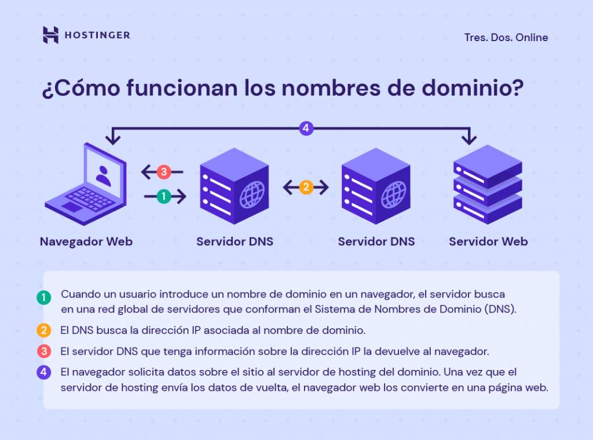

¿Qué es un dominio web?
Un hosting es un servicio de alojamiento para sitios web.
En lugar de alojar personas, el hosting web aloja los contenidos de tu web y tu correo electrónico para que puedan ser visitados en todo momento desde cualquier dispositivo conectado a Internet.
Cuando quieres consultar un archivo en tu ordenador, ese contenido está almacenado en algún sitio, puede ser en el disco duro de tu equipo o un dispositivo de almacenamiento usb, por ejemplo.
Diferencias entre un nombre de dominio y una URL
Aunque un nombre de dominio y una URL (Localizador Universal de Recursos) comparten algunas similitudes, se refieren a cosas diferentes. Una URL es una dirección completa del sitio web que puede dirigir a los usuarios a una página específica de un sitio. Un nombre de dominio es sólo una parte.
Una URL se compone de un protocolo, un dominio y una ruta. El protocolo muestra si un sitio tiene un certificado SSL. Ten en cuenta que las URL tienen una ruta sólo cuando dirigen a los usuarios a una página específica de un sitio.
¿Cómo funcionan los dominios?
Todo sitio web tiene los siguientes dos elementos principales: un nombre de dominio y un servidor de web hosting. Tu nombre de dominio apunta al servidor web que aloja tu sitio.
Ten en cuenta que cada dominio está vinculado a una dirección IP. Cuando un usuario introduce un nombre de dominio en un navegador, el servidor buscará a través de una red global de servidores que conforman el Sistema de Nombres de Dominio (DNS).
Los servidores DNS buscarán la dirección IP asociada al nombre de dominio. El servidor que tenga información sobre la dirección IP la devolverá al navegador web. Luego, solicitará datos sobre el sitio al servidor de hosting del dominio.
El servidor web almacena todos los datos del sitio web, incluidos sus archivos, la base de datos y el código HTML. Una vez que el servidor de alojamiento devuelve los datos, el navegador web los convierte en una página web que los usuarios pueden visitar.
Diferentes tipos de dominios
No todos los dominios de internet siguen la misma fórmula, y si bien los .com constituyen el 46.5% de todos los sitios web a nivel mundial, eso deja mucho espacio para otros tipos de dominios como .org y .net. En general, los tipos más comunes incluyen:
TLD: Dominios de nivel superior (Top Level Domains)
Un dominio de nivel superior es exactamente lo que dice su nombre: un tipo de dominio que se encuentra en el nivel superior del sistema de dominios de Internet. Hay más de mil TLDs disponibles, pero los más comunes incluyen .com, .org, .net y .edu.
La lista oficial de TLDs es mantenida por una organización llamada Autoridad de números asignados de Internet (IANA, por sus siglas en inglés) y puede verse aquí. IANA señala que la lista de TLDs también incluye ccTLD y gTLD, de los que hablaremos a continuación.
ccTLD: Dominios de nivel superior de código de país (Country Code Top Level Domains)
Los ccTLDs usan solo dos letras y se basan en códigos internacionales de países, como .es para España y .jp para Japón. A menudo son utilizados por empresas que están creando sitios dedicados para regiones específicas y pueden ser una buena forma de señalar a los usuarios que han llegado al lugar correct
gTLD: Dominios de nivel superior genérico (Generic Top Level Domains)
Un gTLD es esencialmente un TLD que no depende de un código de país. Muchos gTLDs están destinados a un caso de uso específico, como .edu, que está dirigido a instituciones educativas. Dicho esto, no es necesario que cumplas ningún criterio específico para registrar un gTLD, motivo por el cual .com no solo se utiliza con fines comerciales.
Otros ejemplos de gTLD incluyen .mil (militar), .gov (gobierno), .org (para organizaciones sin fines de lucro y otras organizaciones) y .net, que originalmente fue diseñado para proveedores de servicios de Internet (ISPs) pero que ahora tiene un uso mucho más amplio.
Otros tipos de dominios
Si bien las categorías mencionadas anteriormente son las más frecuentes, existen otras variaciones que te puedes encont
Dominios de segundo nivel
Probablemente los has visto antes. Estamos hablando de un dominio que se encuentra directamente debajo de un dominio de nivel superior. No vamos a ponernos demasiado técnicos aquí porque es más fácil mostrar ejemplos, particularmente cuando se trata de códigos de países.
Por ejemplo, las empresas británicas ocasionalmente usan .co.uk en lugar de .com, y es un ejemplo perfecto de un dominio de segundo nivel. Otro dominio de segundo nivel es .gov.uk, que a menudo es utilizado por instituciones gubernamentales, y .ac.uk, que es utilizado por instituciones académicas y universidades.
Subdominios
Los subdominios son útiles porque no requieren que los webmasters adquieran un dominio web adicional para crear divisiones dentro de su sitio. En cambio, pueden crear un subdominio que efectivamente apunte a un directorio específico en el servidor. Esto puede ser muy útil para sitios de campañas y otros tipos de contenidos web que deben mantenerse separados del sitio principal.
Por ejemplo, Facebook utiliza developers.facebook.com para proporcionar información específica para desarrolladores de aplicaciones y web que quieran usar la API de Facebook. Otro buen ejemplo es support.google.com.
Diferencia entre un dominio web y alojamiento web
Refiriéndonos al inicio de este artículo, si el dominio web es como tu dirección física, el alojamiento web es como el edificio físico y los contenidos se almacenan allí.
Los dominios web se utilizan para crear un pequeño atajo práctico para vincular lo que los visitantes escriben en la barra de direcciones con el servidor que se usa para alojar el sitio web. Son completamente digitales y se almacenan en una base de datos centralizada.
El alojamiento web es un poco diferente porque requiere un servidor físico ubicado en algún lugar del mundo y conectado a Internet. Es esencialmente como un disco duro de computadora que almacena todos los archivos y bases de datos de tu sitio web. Se llama servidor porque literalmente le «sirve» tu sitio web a tus visitantes.
Cuando escribes una URL (por ejemplo, www.hostinger.es) en tu navegador web, éste envía una solicitud al servidor específico en el que está alojado tu sitio. El servidor luego carga los archivos y los transmite por Internet al dispositivo que estás utilizando, que a su vez descarga los archivos y los muestra.
Entonces, ¿qué es un dominio web?
Esto es lo que necesitas saber:
- Un dominio web es el equivalente a una dirección postal de tu sitio web.
- Constan de un nombre de sitio web (como, Hostinger) y una extensión de nombre de dominio (por ejemplo, .com).
- Todos los registros de dominio son supervisados por la ICANN.
- Funcionan reenviando los visitantes al servidor apropiado.
- Los .com son los más populares, ya que están en el 46.5% de la web
- Los ccTLDs usan códigos de país y designan áreas geográficas (por ejemplo, .cn o .es
- Los gTLDs suelen diseñarse para casos de uso específicos (por ejemplo, .org para organizaciones).
- Cada registrador de dominios tiene un proceso de suscripción diferente.
- Puedes usar motores de búsqueda de dominios para encontrar los disponibles.
- Se pueden transferir de un proveedor a otro.
- Los servidores son máquinas físicas que almacenan los archivos de tu sitio web